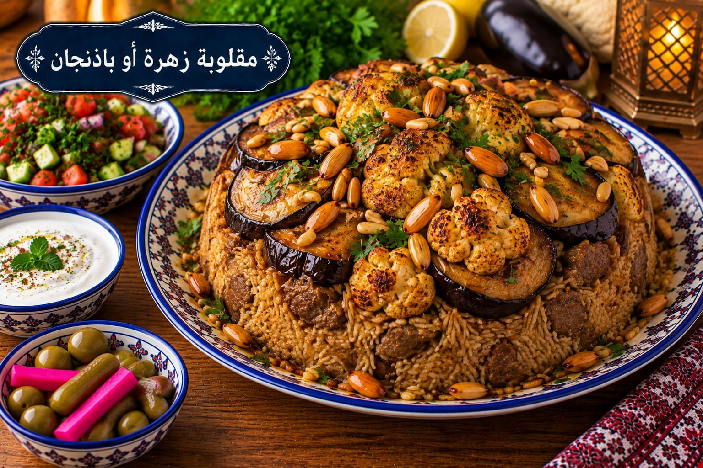

مقلوبة زهرة أو باذنجان
مقلوبة بخيار القرنبيط أو الباذنجان

مقادير مقلوبة زهرة أو باذنجان
- 3 أكواب أرز بسمتي
- 700 غ دجاج
- 1 رأس زهرة صغير أو 2 باذنجان
- 1 بصلة
- 4½ أكواب مرق
- 1½ ملعقة صغيرة ملح
- 1 ملعقة صغيرة بهار مشكل
- ½ ملعقة صغيرة قرفة
- ½ ملعقة صغيرة فلفل أسود
طريقة عمل مقلوبة زهرة أو باذنجان
- اسلقي الدجاج مع البصل والبهارات حتى ينضج واحتفظي بالمرق.
- قطعي الزهرة أو الباذنجان وحمريه أو اشويه حتى يأخذ لونًا ذهبيًا.
- اغسلي الأرز وانقعيه 20 دقيقة ثم صفيه.
- رتبي الدجاج والخضار في قاع القدر ثم الأرز وأضيفي 4½ أكواب من المرق الساخن بعد ضبط الملح.
- بعد الغليان خففي النار 25 دقيقة، أطفئي النار وأريحيها 10 دقائق ثم اقلبيها بحذر.